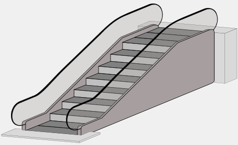
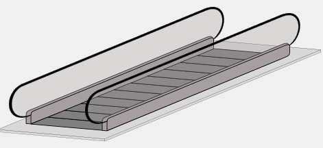
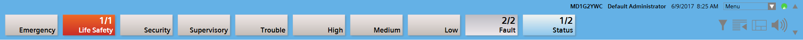
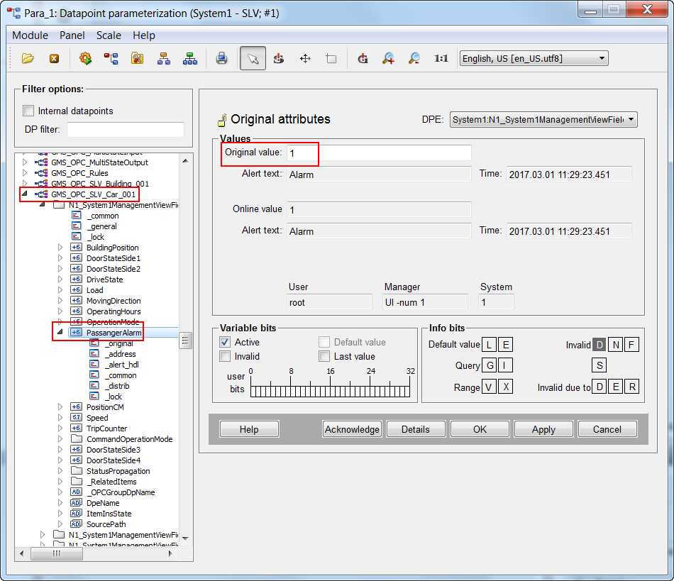
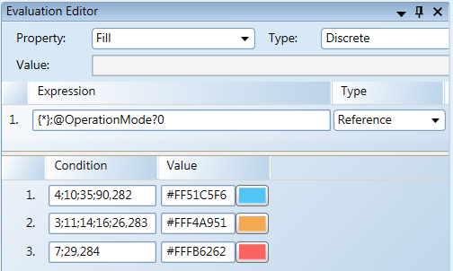

Additional Procedures for Schindler Elevators
Stop Schindler OPC Driver
- System Manager is in Engineering mode.
- In System Browser, select Management View.
- Select Project > Management station > Servers > Main Server > Drivers > [Drivers].
- In the Extended Operation tab, next to the Manager status, click Stop.
- A confirmation message appears.
Delete the Schindler Network
- System Manager is in Engineering mode.
- The Schindler OPC network is on the Field Networks list.
- In System Browser, select Management View.
- Select Project > Field Networks > [Network name].
- Click the OPC tab.
- Click Delete Object
 .
. - A confirmation message displays.
- Click Yes.
- The System Manager status bar displays
Node deleted successfully.

NOTE:
The network structure is deleted in the Management View only. It still remains in the Logical View and the User View. In those views, you have to delete the structure manually. Select the desired view and then the Views tab. Click Remove to delete the structure tree and use the purge function to delete all unused objects.
Purging Unused Objects
- System Manager is in Engineering mode.
- In System Browser, select Management View.
- Select the desired view and select the top object.
- Click the Views tab.
- In Views, select the top object.
- Click Purge Aggregators and then Yes.
- All objects without a child object are deleted in this view.
- Repeat the Steps 2 through 5 for all views.
Defining Travel Heights for Escalators
- System Manager is in Operation mode.
- The elevators and escalators are online.
- In System Browser, select logical view.
- Select Logical > [Subsystem name] > [Building name]
- The elevators and escalators are displayed in the Standard tab.
- Proceed as follows to select the escalator:
- Click the escalator title on the graphic.
or - Select Logical > [Subsystem name] > [Building name] > [Group x] > [Escalator x].
- In the Extended Operation tab, select the Floor start property.
a. In the Value drop-down list, select the floor.
b. Click Change. - In the Extended Operation tab, select the Travel height property.
a. Enter the difference between the floors (a maximum of 3 floors) in the Value field.
b. Click Change.
Escalator | Moving walks |
Travel height: Number of floors >0 | Travel height: Number of floors 0 |
 |  |
Required Customized Modifications
A Schindler project must always be customized:
- Assign passenger alarm to an alarm category based on the applied alarm profile
- Add customized text group extensions
- Color assignments in the graphics symbol for the alarm display
- System Manager is in Engineering mode.
- In System Browser, select Management View.
- Select Project > System Settings > Libraries > L1 Headquarters > Transport > Device > Schindler.
- Click Customize
 .
. - The customized folder for text groups and object model are created.
- Proceed as follows:
a. In the object model, change the alarm class for the passenger alarm.
b. Expand the text groups
c. Expand the alarm color for the Graphics symbol.
Assigning a Passenger Alarm to the Alarm Profile
- The customized folder for text groups and object model are created.
- System Manager is in Engineering mode.
- In System Browser, select Management View.
- Select Project > System Settings > Libraries > L1 Headquarters > Transport > Device > Schindler > Object models > Car.
- Click Customize .
- The customized object model is created.
- Select Project > System Settings > Libraries > L4 Project > Transport > Device > Schindler > Object models > Car.
- Select the Models & Functions tab.
- In the Properties expander, select the PassengerAlarm property.
- In the Alarm configuration expander, select the column Alarm class.
- In the drop-down list on the second line, select option LifeSafetyManual.
NOTE: The assignment for Alarm class to the alarm category must match the alarm profile. - Click Save
 .
.
Checking Event Response Offline
This check does not replace the physical test of the passenger alarm in an elevator. It is merely used to check the assignment to the event profile on the Event bar.
- Select Start > All Programs > [Company name] > Desigo CC > Tools > PARA.
- Enter the system password.
NOTE: The system password is defined on the System Management Console. - Click OK.
- Select the elevator object GMS_OPC_[Network name]_Car_01.
- Select the property PassengerAlarm for an elevator.
- In the Values group field, select property Original value.
- Enter 1 and click Apply.
- The event is displayed in the Alarm Summary Bar. The alarm class must be changed if the alarm is not displayed.

- Check the passenger alarm for each elevator directly in the car.
- Generate a test report on the triggered alarms and hand it over to the principal.

Modifying Alarm Color on the Graphic Symbol
Scenario: The graphics symbol for assigning the alarm color must be supplemented using the customized extension by the customer.
- The customized folder for text groups and object model are created.
- Select Project > System Settings > Libraries > L1 Headquarters > Transport > Common > Graphic Symbols.
- The Graphics Editor displays in the Default tab.
- Select symbol DYN_ALL_OperatingMode_ListOfColor_None_None_001.
- Click Customize .
- The customized symbol is created.
- Select Project > System Settings > Libraries > L4 Project > Transport > Common > Graphic Symbols.
- Select the Default tab.
- Select symbol DYN_ALL_OperatingMode_ListOfColor_None_None_001.
- Click Edit
 .
. - Select the View tab.
- Select the Evaluation Editor check box.
- In the Evaluations Editor expander, select the column Condition.
- Enter the corresponding value (from the text group) for the alarm color using a separator in line 1,2 or 3.
- Click Save .

Logging Data Values
Scenario: You want to permanently log data point values on all elevators to display and evaluate at a later date as needed. The change is made in the object model and impacts all elevators equally.
- System Manager is in Engineering mode.
- In System Browser, select Management View.
- Select Project > System Settings > Libraries > L1 Headquarters > Transport > Device > Schindler > Object models > [Elevator].
- Click Customize .
- The customized object model is created.
- Select Project > System Settings > Libraries > L4 Project > Transport > Device > Schindler > Object models > [Elevator].
- Click the Models & Functions tab.
- In the Properties expander, select the property in question (for example CommandOperationMode.Mode) and select the VL check box.
Note: The value is entered in the database for each change of state. - (Optional) Select an Archive group.
- Click Save .